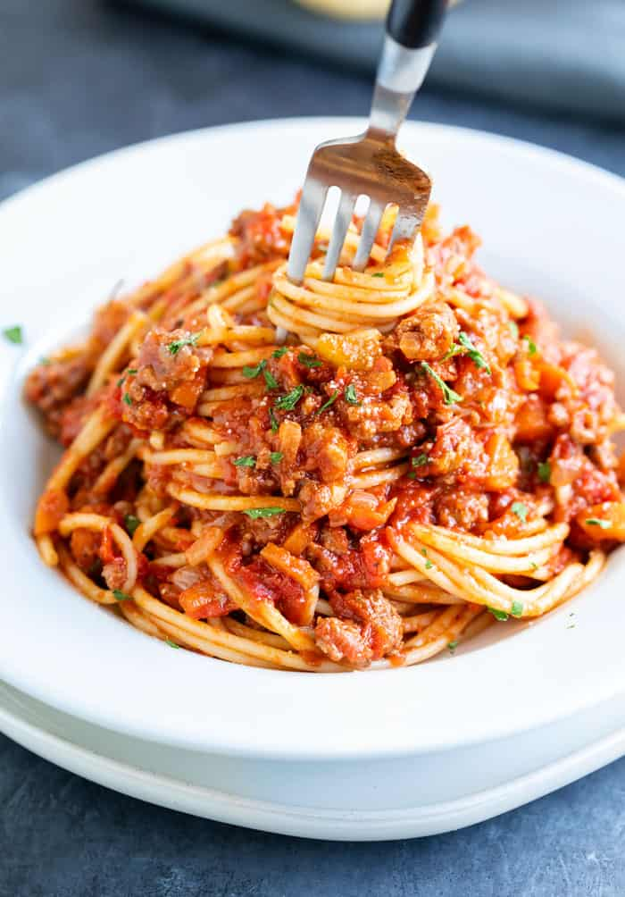

Spaghetti bolognese

Description
A classic bolognese recipe handed to me from my Italian friend. The bolognese sauce is made in the slow cooker and requires little monitoring after you put all the ingredients in!
Ingredients
- 500g mince beef
- 2 large carrots
- 1 large onion
- Half a bunch of celery
- 700mL passata
- Salt (to taste)
- 500g Spaghetti
- 1/2 cup red wine
- Olive oil
- Parmesan cheese (to garnish)
Steps
- Prepare the sofritto: Finely dice the carrots, celery and onion. Add olive oil to a large frying pan and sauté the vegetables for about 10 minutes, or until transparent. Add a generous amount of salt, or to taste.
- Add the sofritto to the slow cooker. In the same pan, brown the mince beef. Add salt.
- Once browned, add the beef to the slow cooker
- Add passatta and wine to the slow cooker. Combine.
- Put the lid on the slow cooker and cook on low for 5-6 hours.
- Prior to serving, prepare a large pot of water and cook the spaghetti for as long as indicated on the package.
- When the spaghetti is cooked, transfer immediately into the slow cooker. Stir through and serve with Parmesan.